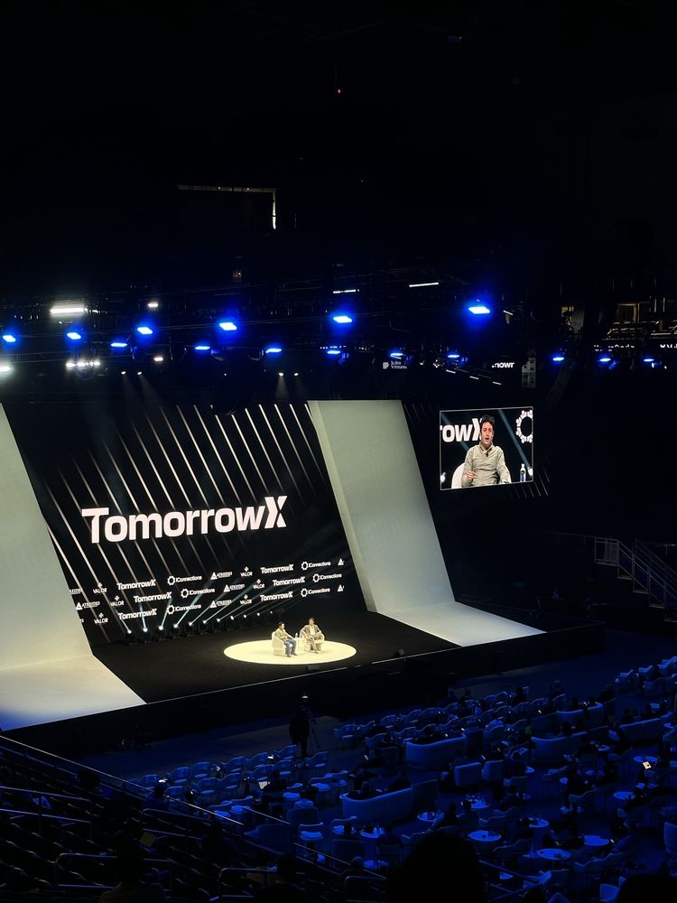

The big numbers got the applause. The arguments about who carries the risk are what I keep thinking about.
In November I went to TomorrowX Summit at the Moody Center on the UT Austin campus, on a student pass. It's an invite-only summit for tech CEOs and investors, and the theme was how AI can revive the American dream. Most people on stage were building or financing the chips, data centers, and power behind AI, so plenty of it was a pitch. The most useful moments were when the speakers disagreed, especially about money.
Boom vs. bubble

Blackstone's president made the strongest case against a bubble. In the dot-com era, the Nasdaq traded at over 60 times earnings. Today it's about 17 times next year's earnings. In the 1990s, telecom companies laid fiber and hoped demand would come, while today demand is ahead of supply. In 2006, people bought homes with 90% or more borrowed, while this build-out is mostly paid for by the biggest companies in the world, which are expected to generate about $1 trillion of EBITDA next year.Even the optimists conceded a lot, though. The same speaker expected misallocated capital and a shakeout. Arm's CEO compared AI to the transcontinental railroads, which were overbuilt in the 1870s until European investors pulled their money and the stock market crashed. The point was that railroads still changed everything. My takeaway was the reverse: something can change the world and still wipe out the people who paid for it too early.
The sharpest pushback came from a panel of credit investors. One had lived through the telecom and shale booms and said it's crazy to think AI won't have periods of oversupply too. Almost everyone they'd talked to that week, 99 out of 100, expected the chip shortage to last another year. To them, that consensus felt skewed too far one way, and the stock and bond markets were already pricing in a bigger risk of too much capacity.
Supply vs. demand
The same panel explained why the headline numbers can mislead. Capacity is usually counted in gigawatts of power, but each new generation of chips produces far more tokens (the units of text AI models generate) per watt. A gigawatt of next year's chips might produce 10 times the output of a gigawatt of older ones, so supply grows much faster than the gigawatt numbers suggest.
Demand has to keep up with that. By one panelist's estimate, only about 30% of tokens today are served to paying customers, and the rest are used internally, mostly for training. They put enterprise AI penetration at around 3%. For all of this capacity to pay off, something has to push business use way up. They called it the next killer app, and their guesses ranged from AI agents that do real work to cybersecurity.
Contracts vs. reality
The companies building capacity said they've protected themselves with contracts. CoreWeave said it only buys chips after a customer signs a take-or-pay contract, meaning the customer pays whether or not it uses the capacity, and that its backlog covers all of its debt. Micron said 75% of its 2027 supply is already sold, and its 26 multi-year supply agreements came with $32 billion of upfront cash and commitments.
The interviewer at the Micron session, a 27-year semiconductor veteran, offered the history: every past take-or-pay deal in the industry was either broken or became an albatross. Picture a customer in 2029, after demand drops, telling a supplier: let us out of this contract, or we'll never buy from you again. The interviewer still believed this time is different, while calling those very dangerous words for an investor. I agree with the warning more than the conclusion. A contract doesn't make risk disappear. It moves it to whoever signed, and if the end demand never shows up, someone still takes the loss.
How long does a chip last?
This was the accounting debate I found most interesting. Companies spread the cost of a chip over its useful life, which is called depreciation, and CoreWeave said the industry averages about six years. CoreWeave argued chips last longer than that. Some of its older A100 chips are now contracted through 2029, about eight years of use, and customers are asking for older chips that suit specific jobs.
Put that next to the credit panel's point about newer chips producing far more per watt, and you get a real tension. If new chips are that much better, how long will anyone keep paying for old ones? Depreciation sounds boring, but it decides how profitable this whole build-out looks. Stretch a chip's useful life and today's profits look bigger.
Cheap money vs. expensive money
Who can borrow cheaply may decide who survives. The credit panel laid out what it costs to borrow against chips today. Loans backed by Nvidia or Broadcom cost about 7.5 to 8%. SpaceX pays about 8.5%. A strong neocloud, one of the newer AI-focused cloud companies, pays about 12%. Smaller AI clouds and labs pay 15% or more, often with warrants, which give lenders the right to buy stock later. One panelist cited an estimate that neoclouds need to earn 30 to 40% more per gigawatt than the big tech companies on the same chips, just to cover their cost of capital.
The biggest players are hoarding both chips and capital, which squeezes everyone else. Some smaller companies run what one panelist called a WeWork-like model: borrow long-term, buy chips, and rent them out short-term. That works in a shortage and breaks in a glut. The panel expects a wave of acquisitions, and a sobering note for venture investors: if you invest at a $5 billion valuation, you may be playing for a $10 billion sale, not a $50 billion outcome.
Who pays for the power?
Every benefit to communities I heard came from the companies themselves. Meta's president said Meta only builds where it's welcome, and that in Richland Parish, Louisiana, its deal with the local utility will cut residents' power costs by more than $2 billion over the life of the project. A local law sends tax surpluses to teachers, and every teacher in the parish got a $50,000 bonus. Blackstone talked about freezing electricity prices for five years around a project in Iowa.
The other side came through too, just less directly. Meta's president acknowledged that data centers became an issue in the midterms. On day two, the hosts said the industry needs to flip the narrative and planned a YouTube ad to do it. One said governors should stop complaining and negotiate payments from the companies instead. A host brought up a developer that had demanded a town's water before anyone else, and said that would never happen again. Arm's CEO warned that if the US pauses data center building, other countries will take it, along with the supply chains around it. I'd want to hear from the people paying the electric bills before calling any of this settled.
Banks vs. the friction that pays them
Quick guess. How much does the average US household give up each year by leaving cash in low-interest bank accounts, according to a Morgan Stanley executive?
About $3,000! US deposits total about $21 trillion and earn about 1.8% on average, while the risk-free rate is about 4%.
That 2.2-point gap is a big part of how banks make money, and it mostly exists because moving money is a hassle. The argument was that AI agents will move cash for us automatically, squeezing that spread toward zero, which is why financial stocks have sold off every time a new AI finance tool is announced. The speaker's case was that this ends in fewer, bigger winners rather than a collapse. When stock quotes moved from fractions to pennies in 2001, spreads collapsed and about 90% of market makers went out of business, but the firms that adapted ended up thriving. For banks, it's the classic innovator's dilemma. As a consumer, I'd love an agent moving my cash. As an MBA student, the question I keep asking is which banks will cut into their own profits first.
What I'm watching now
I left knowing which numbers I want to keep watching: how long chips are really depreciated, how much AI output is actually sold, what the riskiest borrowers pay, and what families near new data centers pay for power. Thank you to the TomorrowX team for saving seats for students, and for putting people on stage who didn't all agree!